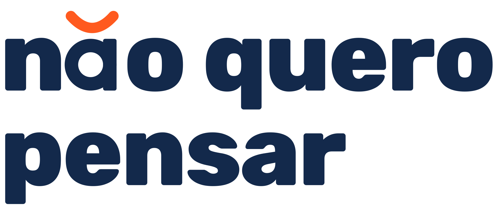

Política de privacidade
Última atualização: 10 de novembro de 2026
1. Quem somos
O Não Quero Pensar envia, pelo WhatsApp, indicações de comida, filmes, séries e programas de acordo com o seu perfil. O controlador dos seus dados pessoais é Caio Sousa, CNPJ 45.130.947/0001-55. Contato do encarregado de dados: contato@naoqueropensar.com.
2. Quais dados coletamos
- Cadastro: nome, e-mail, número de WhatsApp e CEP. Pelo CEP guardamos bairro, cidade e uma localização aproximada.
- Preferências: streamings que você assina, comidas de que gosta, o que não come e gêneros de filmes e séries.
- Uso do serviço: mensagens que você envia, pedidos, indicações recebidas e quando você pede outra opção. Dos áudios, guardamos só o texto transcrito.
- Convites: quem convidou você e quem você convidou.
Não coletamos dados de pagamento durante o período gratuito. Restrições alimentares servem apenas para filtrar indicações.
3. Para que usamos
- Entender o seu pedido e enviar uma indicação adequada ao seu perfil e à sua região.
- Enviar mensagens no WhatsApp, com o seu consentimento.
- Melhorar as indicações e medir o custo e o uso do serviço.
- Controlar os convites do período de testes.
Bases legais: execução do serviço que você pediu, seu consentimento para receber mensagens e legítimo interesse em melhorar o serviço (LGPD, art. 7º).
4. Com quem compartilhamos
| Fornecedor | Para quê |
|---|---|
| Meta (WhatsApp) | Envio e recebimento de mensagens |
| Supabase | Armazenamento dos dados, na região de São Paulo |
| Anthropic | Inteligência artificial que interpreta o pedido e ajuda a escolher a indicação |
| Transcrição de áudios e consulta de lugares perto do seu CEP | |
| BrasilAPI | Consulta do CEP no cadastro |
| GitHub | Hospedagem desta página |
Não vendemos seus dados e não os usamos para publicidade de terceiros.
5. Transferência internacional
Anthropic, Google e Meta podem processar dados fora do Brasil, conforme o art. 33 da LGPD e os compromissos contratuais de proteção de dados de cada um.
6. Fontes públicas e serviços de terceiros
- Google Maps Platform: usamos dados do Google para encontrar lugares. Veja a Política de Privacidade do Google.
- YouTube: algumas indicações consideram vídeos públicos, obtidos pelos Serviços de API do YouTube. Veja os Termos de Serviço do YouTube.
- Busca na web: consideramos menções públicas a lugares, eventos, filmes e séries encontradas em buscas na internet, sempre com a fonte. Não coletamos dados de pessoas nessas buscas.
7. Por quanto tempo guardamos
- Cadastro, preferências e histórico: enquanto sua conta estiver ativa.
- Áudios: só o tempo da transcrição.
- Depois do pedido de exclusão, apagamos seus dados em até 15 dias, exceto o que a lei exigir manter. Registros de custo ficam sem nenhum vínculo com você.
8. Seus direitos
Você pode confirmar se tratamos seus dados, acessá-los, corrigi-los, pedir a exclusão, revogar o consentimento e pedir a portabilidade (LGPD, art. 18).
Para parar de receber mensagens, escreva SAIR no WhatsApp do serviço. Para apagar seus dados, escreva "apagar meus dados". Para os demais pedidos, escreva para contato@naoqueropensar.com.
9. Segurança
Os dados ficam em serviços com criptografia e acesso restrito. As chaves de acesso ficam em cofres de segredo, nunca no código.
10. Menores de idade
O serviço é destinado a maiores de 18 anos.
11. Mudanças nesta política
Avisaremos pelo WhatsApp sobre mudanças relevantes.
Não Quero Pensar · Caio Sousa · CNPJ 45.130.947/0001-55 · São Paulo/SP · contato@naoqueropensar.com